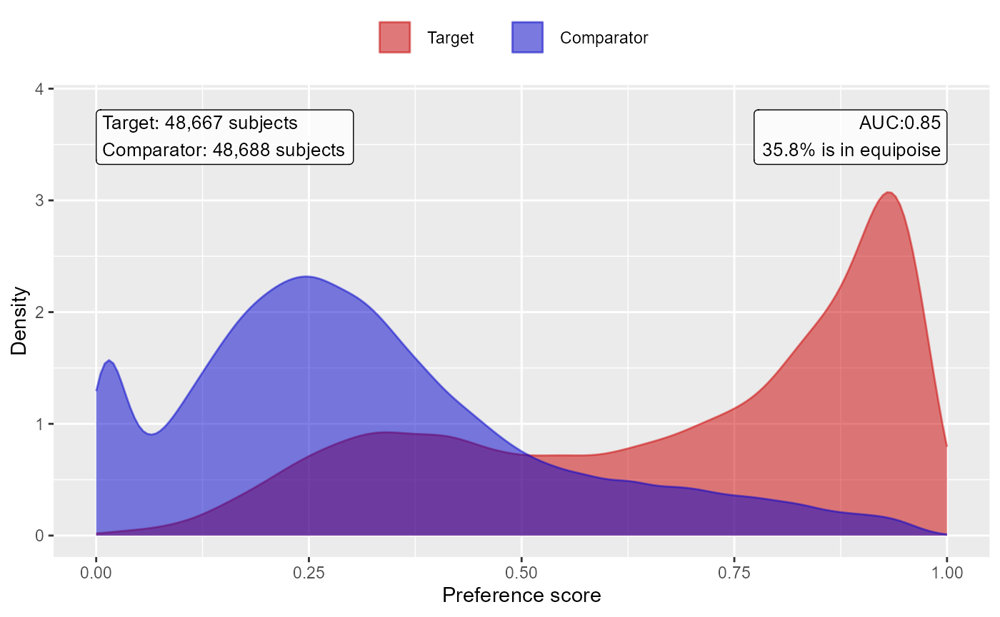
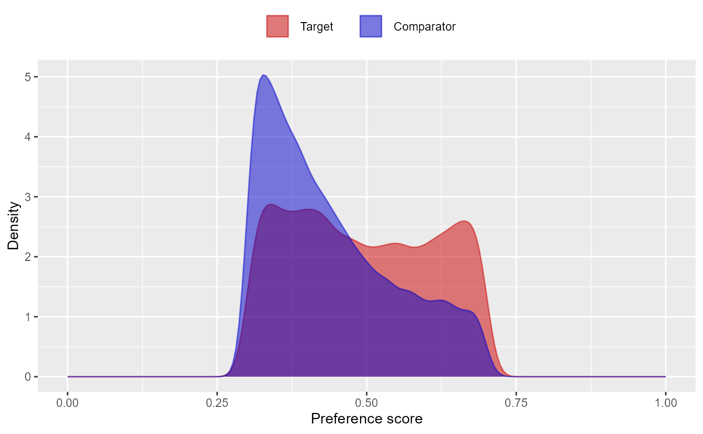
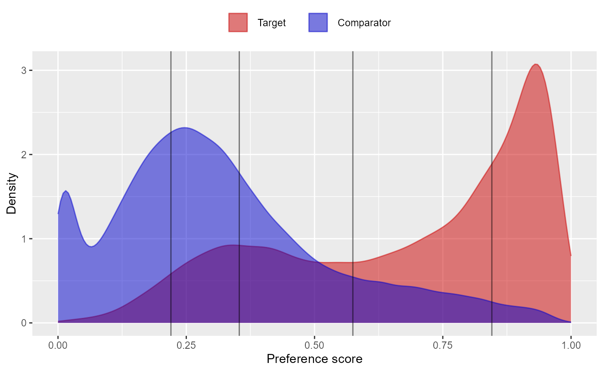
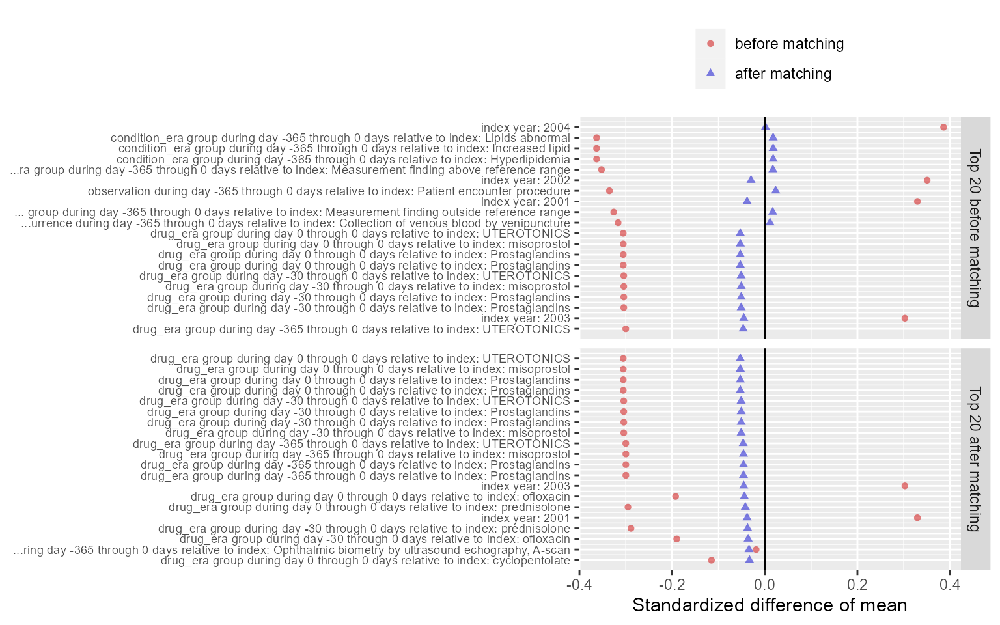
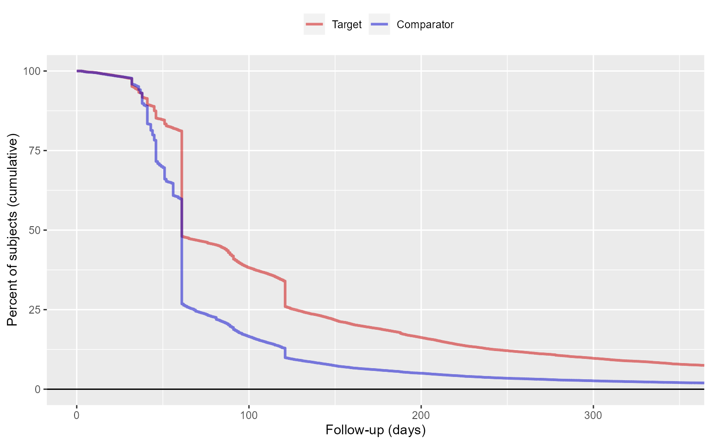
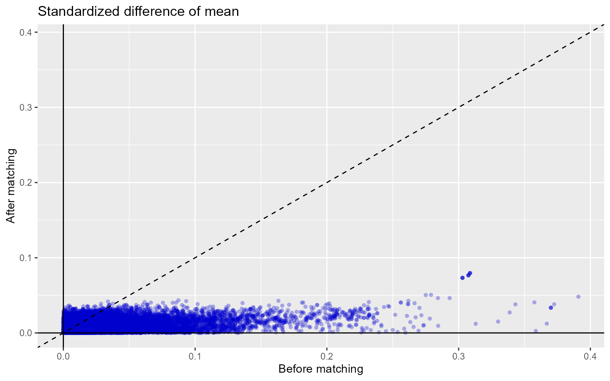
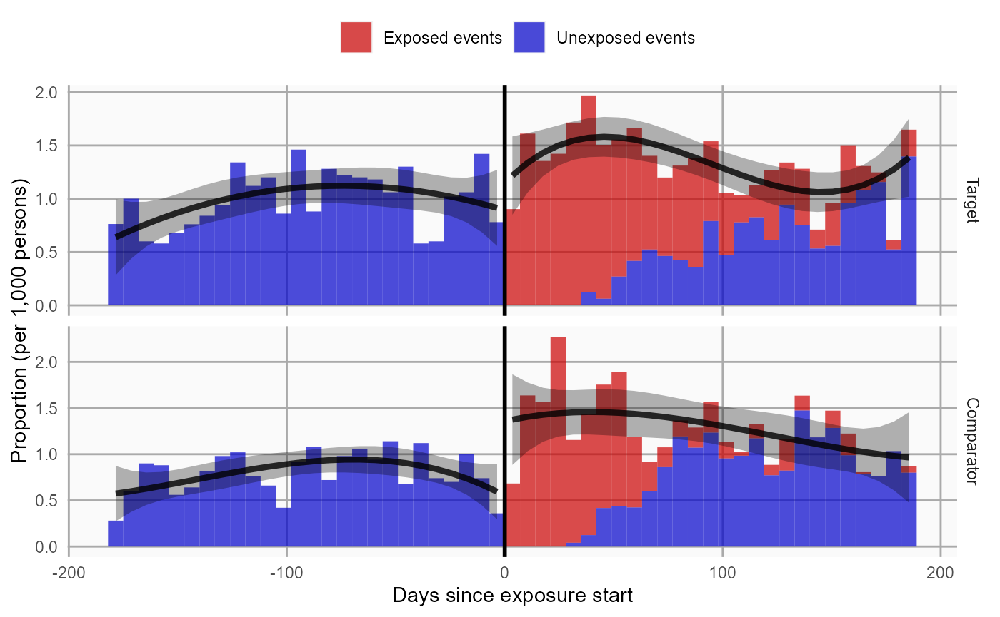

Single studies using the CohortMethod package
Martijn J. Schuemie, Marc A. Suchard and Patrick Ryan
2019-08-27
Source:vignettes/SingleStudies.Rmd
SingleStudies.RmdIntroduction
This vignette describes how you can use the CohortMethod package to perform a single new-user cohort study. We will walk through all the steps needed to perform an exemplar study, and we have selected the well-studied topic of the effect of coxibs versus non-selective non-steroidal anti-inflammatory drugs (NSAIDs) on gastrointestinal (GI) bleeding-related hospitalization. For simplicity, we focus on one coxib – celecoxib – and one non-selective NSAID – diclofenac.
Installation instructions
Before installing the CohortMethod package make sure you have Java available. Java can be downloaded from www.java.com. For Windows users, RTools is also necessary. RTools can be downloaded from CRAN.
The CohortMethod package is currently maintained in a Github repository, and has dependencies on other packages in Github. All of these packages can be downloaded and installed from within R using the drat package:
install.packages("drat")
drat::addRepo("OHDSI")
install.packages("CohortMethod")Once installed, you can type library(CohortMethod) to load the package.
Data extraction
The first step in running the CohortMethod is extracting all necessary data from the database server holding the data in the Observational Medical Outcomes Partnership (OMOP) Common Data Model (CDM) format.
Configuring the connection to the server
We need to tell R how to connect to the server where the data are. CohortMethod uses the DatabaseConnector package, which provides the createConnectionDetails function. Type ?createConnectionDetails for the specific settings required for the various database management systems (DBMS). For example, one might connect to a PostgreSQL database using this code:
connectionDetails <- createConnectionDetails(dbms = "postgresql",
server = "localhost/ohdsi",
user = "joe",
password = "supersecret")
cdmDatabaseSchema <- "my_cdm_data"
resultsDatabaseSchema <- "my_results"The last two lines define the cdmDatabaseSchema and resultSchema variables. We’ll use these later to tell R where the data in CDM format live, and where we want to write intermediate tables. Note that for Microsoft SQL Server, databaseschemas need to specify both the database and the schema, so for example cdmDatabaseSchema <- "my_cdm_data.dbo".
Preparing the exposures and outcome(s)
We need to define the exposures and outcomes for our study. One could use an external cohort definition tools, but in this example we do this by writing SQL statements against the OMOP CDM that populate a table of events in which we are interested. The resulting table should have the same structure as the cohort table in the CDM. This means it should have the fields cohort_definition_id, cohort_start_date, cohort_end_date,and subject_id.
For our example study, we have created a file called coxibVsNonselVsGiBleed.sql with the following contents:
/***********************************
File coxibVsNonselVsGiBleed.sql
***********************************/
IF OBJECT_ID('@resultsDatabaseSchema.coxibVsNonselVsGiBleed', 'U') IS NOT NULL
DROP TABLE @resultsDatabaseSchema.coxibVsNonselVsGiBleed;
CREATE TABLE @resultsDatabaseSchema.coxibVsNonselVsGiBleed (
cohort_definition_id INT,
cohort_start_date DATE,
cohort_end_date DATE,
subject_id BIGINT
);
INSERT INTO @resultsDatabaseSchema.coxibVsNonselVsGiBleed (
cohort_definition_id,
cohort_start_date,
cohort_end_date,
subject_id
)
SELECT 1, -- Exposure
drug_era_start_date,
drug_era_end_date,
person_id
FROM @cdmDatabaseSchema.drug_era
WHERE drug_concept_id = 1118084;-- celecoxib
INSERT INTO @resultsDatabaseSchema.coxibVsNonselVsGiBleed (
cohort_definition_id,
cohort_start_date,
cohort_end_date,
subject_id
)
SELECT 2, -- Comparator
drug_era_start_date,
drug_era_end_date,
person_id
FROM @cdmDatabaseSchema.drug_era
WHERE drug_concept_id = 1124300; --diclofenac
INSERT INTO @resultsDatabaseSchema.coxibVsNonselVsGiBleed (
cohort_definition_id,
cohort_start_date,
cohort_end_date,
subject_id
)
SELECT 3, -- Outcome
condition_start_date,
condition_end_date,
condition_occurrence.person_id
FROM @cdmDatabaseSchema.condition_occurrence
INNER JOIN @cdmDatabaseSchema.visit_occurrence
ON condition_occurrence.visit_occurrence_id = visit_occurrence.visit_occurrence_id
WHERE condition_concept_id IN (
SELECT descendant_concept_id
FROM @cdmDatabaseSchema.concept_ancestor
WHERE ancestor_concept_id = 192671 -- GI - Gastrointestinal haemorrhage
)
AND visit_occurrence.visit_concept_id IN (9201, 9203);This is parameterized SQL which can be used by the SqlRender package. We use parameterized SQL so we do not have to pre-specify the names of the CDM and result schemas. That way, if we want to run the SQL on a different schema, we only need to change the parameter values; we do not have to change the SQL code. By also making use of translation functionality in SqlRender, we can make sure the SQL code can be run in many different environments.
library(SqlRender)
sql <- readSql("coxibVsNonselVsGiBleed.sql")
sql <- renderSql(sql,
cdmDatabaseSchema = cdmDatabaseSchema,
resultsDatabaseSchema = resultsDatabaseSchema)$sql
sql <- translateSql(sql, targetDialect = connectionDetails$dbms)$sql
connection <- connect(connectionDetails)
executeSql(connection, sql)In this code, we first read the SQL from the file into memory. In the next line, we replace the two parameter names with the actual values. We then translate the SQL into the dialect appropriate for the DBMS we already specified in the connectionDetails. Next, we connect to the server, and submit the rendered and translated SQL.
If all went well, we now have a table with the events of interest. We can see how many events per type:
sql <- paste("SELECT cohort_definition_id, COUNT(*) AS count",
"FROM @resultsDatabaseSchema.coxibVsNonselVsGiBleed",
"GROUP BY cohort_definition_id")
sql <- renderSql(sql, resultsDatabaseSchema = resultsDatabaseSchema)$sql
sql <- translateSql(sql, targetDialect = connectionDetails$dbms)$sql
querySql(connection, sql)#> cohort_concept_id count
#> 1 1 184979
#> 2 2 798752
#> 3 3 635619Extracting the data from the server
Now we can tell CohortMethod to define the cohorts based on our events, construct covariates, and extract all necessary data for our analysis.
Important: The target and comparator drug must not be included in the covariates, including any descendant concepts. If the targetId and comparatorId arguments represent real concept IDs, you can set the excludeDrugsFromCovariates argument of the getDbCohortMethodData function to TRUE and automatically the drugs and their descendants will be excluded from the covariates. However, if the targetId and comparatorId arguments do not represent concept IDs, such as in the example above, you will need to manually add the drugs and descendants to the excludedCovariateConceptIds of the covariate settings. In this example code we exclude all NSAIDs from the covariates by pointing to the concept ID of the NSAID class and specifying addDescendantsToExclude = TRUE.
nsaids <- 21603933
# Define which types of covariates must be constructed:
covSettings <- createDefaultCovariateSettings(excludedCovariateConceptIds = nsaids,
addDescendantsToExclude = TRUE)
#Load data:
cohortMethodData <- getDbCohortMethodData(connectionDetails = connectionDetails,
cdmDatabaseSchema = cdmDatabaseSchema,
oracleTempSchema = resultsDatabaseSchema,
targetId = 1,
comparatorId = 2,
outcomeIds = 3,
studyStartDate = "",
studyEndDate = "",
exposureDatabaseSchema = resultsDatabaseSchema,
exposureTable = "coxibVsNonselVsGiBleed",
outcomeDatabaseSchema = resultsDatabaseSchema,
outcomeTable = "coxibVsNonselVsGiBleed",
cdmVersion = cdmVersion,
excludeDrugsFromCovariates = FALSE,
firstExposureOnly = TRUE,
removeDuplicateSubjects = TRUE,
restrictToCommonPeriod = FALSE,
washoutPeriod = 180,
covariateSettings = covSettings)
cohortMethodData#> CohortMethodData object
#>
#> Treatment concept ID: 1
#> Comparator concept ID: 2
#> Outcome concept ID(s): 3There are many parameters, but they are all documented in the CohortMethod manual. The createDefaultCovariateSettings function is described in the FeatureExtraction package. In short, we are pointing the function to the table created earlier and indicating which concept IDs in that table identify the target, comparator and outcome. We instruct that the default set of covariates should be constructed, including covariates for all conditions, drug exposures, and procedures that were found on or before the index date. To customize the set of covariates, please refer to the FeatureExtraction package vignette by typing vignette("UsingFeatureExtraction", package="FeatureExtraction").
All data about the cohorts, outcomes, and covariates are extracted from the server and stored in the cohortMethodData object. This object uses the package ff to store information in a way that ensures R does not run out of memory, even when the data are large.
We can use the generic summary() function to view some more information of the data we extracted:
summary(cohortMethodData)#> CohortMethodData object summary
#>
#> Treatment concept ID: 1
#> Comparator concept ID: 2
#> Outcome concept ID(s): 3
#>
#> Treated persons: 49102
#> Comparator persons: 348558
#>
#> Outcome counts:
#> Event count Person count
#> 3 27636 18141
#>
#> Covariates:
#> Number of covariates: 54112
#> Number of non-zero covariate values: 161150531Saving the data to file
Creating the cohortMethodData file can take considerable computing time, and it is probably a good idea to save it for future sessions. Because cohortMethodData uses ff, we cannot use R’s regular save function. Instead, we’ll have to use the saveCohortMethodData() function:
saveCohortMethodData(cohortMethodData, "coxibVsNonselVsGiBleed")We can use the loadCohortMethodData() function to load the data in a future session.
Defining new users
Typically, a new user is defined as first time use of a drug (either target or comparator), and typically a washout period (a minimum number of days prior first use) is used to make sure it is truly first use. When using the CohortMethod package, you can enforce the necessary requirements for new use in three ways:
- When creating the cohorts in the database, for example when using a cohort definition tool.
- When loading the cohorts using the
getDbCohortMethodDatafunction, you can use thefirstExposureOnly,removeDuplicateSubjects,restrictToCommonPeriod, andwashoutPeriodarguments. (As shown in the example above). - When defining the study population using the
createStudyPopulationfunction (see below) using thefirstExposureOnly,removeDuplicateSubjects,restrictToCommonPeriod, andwashoutPeriodarguments.
The advantage of option 1 is that the input cohorts are already fully defined outside of the CohortMethod package, and for example external cohort characterization tools can be used on the same cohorts used in this package. The advantage of options 2 and 3 is that it saves you the trouble of limiting to first use yourself, for example allowing you to directly use the drug_era table in the CDM. Option 2 is more efficient than 3, since only data for first use will be fetched, while option 3 is less efficient but allows you to compare the original cohorts to the study population.
Defining the study population
Typically, the exposure cohorts and outcome cohorts will be defined independently of each other. When we want to produce an effect size estimate, we need to further restrict these cohorts and put them together, for example by removing exposed subjects that had the outcome prior to exposure, and only keeping outcomes that fall within a defined risk window. For this we can use the createStudyPopulation function:
studyPop <- createStudyPopulation(cohortMethodData = cohortMethodData,
outcomeId = 3,
firstExposureOnly = FALSE,
restrictToCommonPeriod = FALSE,
washoutPeriod = 0,
removeDuplicateSubjects = "keep all",
removeSubjectsWithPriorOutcome = TRUE,
minDaysAtRisk = 1,
riskWindowStart = 0,
startAnchor = "cohort start",
riskWindowEnd = 30,
endAnchor = "cohort end")Note that we’ve set firstExposureOnly and removeDuplicateSubjects to FALSE, and washoutPeriod to zero because we already filtered on these arguments when using the getDbCohortMethodData function. During loading we set restrictToCommonPeriod to FALSE, and we do the same here because we do not want to force the comparison to restrict only to time when both drugs are recorded. We specify the outcome ID we will use, and that people with outcomes prior to the risk window start date will be removed. The risk window is defined as starting at the cohort start date (the index date, riskWindowStart = 0 and startAnchor = "cohort start"), and the risk windows ends 30 days after the cohort ends (riskWindowEnd = 30 and endAnchor = "cohort end"). Note that the risk windows are truncated at the end of observation or the study end date. We also remove subjects who have no time at risk. To see how many people are left in the study population we can always use the getAttritionTable function:
getAttritionTable(studyPop)#> description treatedPersons comparatorPersons treatedExposures comparatorExposures
#> 1 Original cohorts 104225 511194 184979 798752
#> 2 First exp. only & removed subs in both cohorts & 180 days of obs. prior 49102 348558 49102 348558
#> 3 No prior outcome 47411 339992 47411 339992
#> 4 Have at least 1 days at risk 47377 339648 47377 339648One additional filtering step that is often used is matching or trimming on propensity scores, as will be discussed next.
Propensity scores
The CohortMethod can use propensity scores to adjust for potential confounders. Instead of the traditional approach of using a handful of predefined covariates, CohortMethod typically uses thousands to millions of covariates that are automatically constructed based on conditions, procedures and drugs in the records of the subjects.
Fitting a propensity model
We can fit a propensity model using the covariates constructed by the getDbcohortMethodData() function:
ps <- createPs(cohortMethodData = cohortMethodData, population = studyPop)The createPs() function uses the Cyclops package to fit a large-scale regularized logistic regression.
To fit the propensity model, Cyclops needs to know the hyperparameter value which specifies the variance of the prior. By default Cyclops will use cross-validation to estimate the optimal hyperparameter. However, be aware that this can take a really long time. You can use the prior and control parameters of the createPs() to specify Cyclops behavior, including using multiple CPUs to speed-up the cross-validation.
Propensity score diagnostics
We can compute the area under the receiver-operator curve (AUC) for the propensity score model:
computePsAuc(ps)#> [1] 0.8157477We can also plot the propensity score distribution, although we prefer the preference score distribution:
plotPs(ps, scale = "preference", showCountsLabel = TRUE, showAucLabel = TRUE, showEquiposeLabel = TRUE)
It is also possible to inspect the propensity model itself by showing the covariates that have non-zero coefficients:
propensityModel <- getPsModel(ps, cohortMethodData)
head(propensityModel)#> coefficient covariateId covariateName
#> (Intercept) -1.7741683 NA (Intercept)
#> 27 1.4330013 2007006 index year: 2007
#> 855 1.3144444 2101660504 ...s on knee joint; total knee arthroplasty
#> 1868 1.2024638 4253901210 ... to index: Juvenile rheumatoid arthritis
#> 5 -1.1604170 3003 age group: 15-19
#> 28 0.9963337 2008006 index year: 2008One advantage of using the regularization when fitting the propensity model is that most coefficients will shrink to zero and fall out of the model. It is a good idea to inspect the remaining variables for anything that should not be there, for example variations of the drugs of interest that we forgot to exclude.
Using the propensity score
We can use the propensity scores to trim, stratify, match, or weigh our population. For example, one could trim to equipoise, meaning only subjects with a preference score between 0.25 and 0.75 are kept:
trimmedPop <- trimByPsToEquipoise(ps)
plotPs(trimmedPop, ps, scale = "preference")
Instead (or additionally), we could stratify the population based on the propensity score:
stratifiedPop <- stratifyByPs(ps, numberOfStrata = 5)
plotPs(stratifiedPop, ps, scale = "preference")
We can also match subjects based on propensity scores. In this example, we’re using one-to-one matching:
matchedPop <- matchOnPs(ps, caliper = 0.2, caliperScale = "standardized logit", maxRatio = 1)
plotPs(matchedPop, ps)
Note that for both stratification and matching it is possible to specify additional matching criteria such as age and sex using the stratifyByPsAndCovariates() and matchOnPsAndCovariates() functions, respectively.
We can see the effect of trimming and/or matching on the population using the getAttritionTable function:
getAttritionTable(matchedPop)#> description targetPersons comparatorPersons targetExposures comparatorExposures
#> 1 Original cohorts 104225 511194 184979 798752
#> 2 First exp. only & removed subs in both cohorts & 180 days of obs. prior 49102 348558 49102 348558
#> 3 No prior outcome 47411 339992 47411 339992
#> 4 Have at least 1 days at risk 47377 339648 47377 339648
#> 5 Matched on propensity score 44960 44960 44960 44960Or, if we like, we can plot an attrition diagram:
drawAttritionDiagram(matchedPop)
Evaluating covariate balance
To evaluate whether our use of the propensity score is indeed making the two cohorts more comparable, we can compute the covariate balance before and after trimming, matching, and/or stratifying:
balance <- computeCovariateBalance(matchedPop, cohortMethodData)plotCovariateBalanceScatterPlot(balance, showCovariateCountLabel = TRUE, showMaxLabel = TRUE)#> Warning: Removed 10591 rows containing missing values (geom_point).
plotCovariateBalanceOfTopVariables(balance)
The ‘before matching’ population is the population as extracted by the getDbCohortMethodData function, so before any further filtering steps.
Inspecting select population characteristics
It is customary to include a table in your paper that lists some select population characteristics before and after matching/stratification/trimming. This is usually the first table, and so will be referred to as ‘table 1’. To generate this table, you can use the createCmTable1 function:
createCmTable1(balance) Before matching After matching
Target Comparator Target Comparator
Characteristic % % Std. diff % % Std. diff
Age group
00-04 0.1 0.1 0.02 0.1 0.0 0.02
05-09 0.3 0.2 0.02 0.2 0.2 0.00
10-14 0.8 2.3 -0.12 0.8 0.7 0.02
15-19 2.7 11.1 -0.34 2.8 2.3 0.04
20-24 2.2 6.5 -0.21 2.3 2.0 0.02
25-29 3.9 9.6 -0.23 4.1 3.7 0.02
30-34 5.7 11.0 -0.19 6.0 5.7 0.01
35-39 7.0 10.8 -0.14 7.2 7.1 0.00
40-44 9.0 9.7 -0.02 9.2 9.3 0.00
45-49 11.1 9.4 0.06 11.2 11.6 -0.01
50-54 13.6 9.7 0.12 13.4 13.8 -0.01
55-59 13.3 8.5 0.16 13.3 13.7 -0.01
60-64 12.0 5.6 0.23 11.6 12.1 -0.01
65-69 5.5 1.8 0.20 5.2 5.2 0.00
70-74 4.2 1.2 0.18 4.0 4.0 0.00
75-79 3.4 1.0 0.16 3.3 3.3 0.00
80-84 2.9 0.8 0.16 2.8 2.8 0.00
85-89 2.2 0.7 0.13 2.1 2.2 -0.01
90-94 0.1 0.1 0.02 0.1 0.1 0.01
Gender: female 69.6 71.9 -0.05 69.9 70.0 0.00
Race
race = Black or African American 17.7 27.5 -0.24 17.9 17.0 0.02
race = Other Race 20.1 17.8 0.06 20.8 21.5 -0.02
race = White 62.2 54.7 0.15 61.3 61.4 0.00
Ethnicity
ethnicity = Hispanic or Latino 1.6 2.2 -0.04 1.7 1.7 0.00
ethnicity = Not Hispanic or Latino 18.4 15.7 0.07 19.1 19.8 -0.02
Medical history: General
Acute respiratory disease 31.0 34.5 -0.08 30.3 29.8 0.01
Attention deficit hyperactivity disorder 2.1 3.8 -0.10 2.1 2.0 0.01
Chronic liver disease 4.4 3.2 0.06 4.1 4.3 -0.01
Chronic obstructive lung disease 16.5 9.3 0.22 15.3 15.5 -0.01
Crohn's disease 0.6 0.4 0.03 0.5 0.5 0.00
Dementia 2.0 0.8 0.10 1.7 1.7 0.00
Depressive disorder 30.0 26.3 0.08 28.8 29.2 -0.01
Diabetes mellitus 22.6 15.1 0.19 21.7 22.3 -0.01
Gastroesophageal reflux disease 21.8 16.4 0.14 20.4 20.9 -0.01
Gastrointestinal hemorrhage 3.9 2.8 0.06 2.1 2.1 -0.01
Human immunodeficiency virus infection 0.6 0.7 -0.01 0.6 0.6 0.00
Hyperlipidemia 31.4 21.9 0.22 30.6 31.8 -0.03
Hypertensive disorder 45.7 33.3 0.26 44.0 44.7 -0.01
Lesion of liver 1.3 0.8 0.04 1.0 1.1 0.00
Obesity 14.9 14.9 0.00 14.4 14.6 -0.01
Osteoarthritis 38.7 22.6 0.36 36.6 37.8 -0.03
Pneumonia 5.4 3.4 0.10 4.8 4.8 0.00
Psoriasis 1.0 0.7 0.03 1.0 1.0 0.00
Renal impairment 4.5 3.0 0.08 3.9 4.1 -0.01
Rheumatoid arthritis 4.1 2.0 0.13 3.8 4.1 -0.02
Schizophrenia 3.0 2.1 0.06 2.6 2.6 0.00
Ulcerative colitis 0.4 0.2 0.03 0.3 0.3 -0.01
Urinary tract infectious disease 13.2 14.5 -0.04 12.4 12.6 0.00
Viral hepatitis C 3.2 2.4 0.05 3.0 3.2 -0.01
Visual system disorder 31.6 27.6 0.09 30.7 31.0 -0.01
Medical history: Cardiovascular disease
Atrial fibrillation 2.5 1.1 0.11 2.2 2.4 -0.02
Cerebrovascular disease 5.1 3.1 0.10 4.6 4.7 0.00
Coronary arteriosclerosis 8.9 4.5 0.18 8.1 8.5 -0.02
Heart disease 23.7 14.2 0.25 21.7 22.3 -0.01
Heart failure 6.2 3.3 0.14 5.5 5.6 -0.01
Ischemic heart disease 6.3 3.4 0.13 5.7 5.9 -0.01
Peripheral vascular disease 11.9 6.4 0.19 10.8 11.3 -0.02
Pulmonary embolism 1.1 0.5 0.07 0.9 0.9 -0.01
Venous thrombosis 3.0 1.6 0.09 2.6 2.6 0.00
Medical history: Neoplasms
Hematologic neoplasm 1.2 0.5 0.07 1.0 1.0 0.00
Malignant lymphoma 0.4 0.2 0.03 0.3 0.3 0.00
Malignant neoplasm of anorectum 0.2 0.1 0.04 0.2 0.2 0.00
Malignant neoplastic disease 6.3 3.2 0.15 5.6 5.7 0.00
Malignant tumor of breast 1.5 0.8 0.06 1.4 1.6 -0.01
Malignant tumor of colon 0.4 0.2 0.04 0.3 0.3 0.00
Malignant tumor of lung 0.5 0.1 0.06 0.4 0.4 0.00
Malignant tumor of urinary bladder 0.2 0.1 0.03 0.2 0.1 0.00
Primary malignant neoplasm of prostate 0.4 0.2 0.04 0.3 0.3 0.00
Medication use
Agents acting on the renin-angiotensin system 49.5 32.4 0.35 48.4 49.7 -0.03
Antibacterials for systemic use 72.3 72.9 -0.01 71.5 72.1 -0.01
Antidepressants 61.2 51.0 0.21 59.8 61.0 -0.02
Antiepileptics 73.7 72.0 0.04 72.9 73.8 -0.02
Antiinflammatory and antirheumatic products 0.0 0.0 0.01 0.0 0.0 0.00
Antineoplastic agents 17.7 14.7 0.08 16.3 16.4 0.00
Antipsoriatics 7.7 6.7 0.04 7.7 8.1 -0.02
Antithrombotic agents 20.5 9.7 0.31 18.2 19.0 -0.02
Beta blocking agents 50.9 36.6 0.29 49.6 50.5 -0.02
Calcium channel blockers 51.0 34.0 0.35 50.1 51.3 -0.02
Diuretics 59.8 44.4 0.31 58.6 59.6 -0.02
Drugs for acid related disorders 69.1 64.0 0.11 67.9 69.1 -0.03
Drugs for obstructive airway diseases 56.5 55.1 0.03 55.7 56.4 -0.01
Drugs used in diabetes 29.6 19.0 0.25 28.9 29.9 -0.02
Immunosuppressants 3.4 1.7 0.11 3.2 3.5 -0.02
Lipid modifying agents 42.3 26.4 0.34 41.3 42.8 -0.03
Opioids 73.5 73.5 0.00 72.6 73.2 -0.01
Psycholeptics 82.3 78.2 0.10 81.5 82.2 -0.02
Psychostimulants, agents used for adhd and nootropics 69.9 70.6 -0.02 69.0 69.6 -0.01 Inserting the population cohort in the database
For various reasons it might be necessary to insert the study population back into the database, for example because we want to use an external cohort characterization tool. We can use the insertDbPopulation function for this purpose:
insertDbPopulation(population = matchedPop,
cohortIds = c(101,100),
connectionDetails = connectionDetails,
cohortDatabaseSchema = resultsDatabaseSchema,
cohortTable = "coxibVsNonselVsGiBleed",
createTable = FALSE,
cdmVersion = cdmVersion)This function will store the population in a table with the same structure as the cohort table in the CDM, in this case in the same table where we had created our original cohorts.
Follow-up and power
Before we start fitting an outcome model, we might be interested to know whether we have sufficient power to detect a particular effect size. It makes sense to perform these power calculations once the study population has been fully defined, so taking into account loss to the various inclusion and exclusion criteria (such as no prior outcomes), and loss due to matching and/or trimming. Since the sample size is fixed in retrospective studies (the data has already been collected), and the true effect size is unknown, the CohortMethod package provides a function to compute the minimum detectable relative risk (MDRR) instead:
computeMdrr(population = studyPop,
modelType = "cox",
alpha = 0.05,
power = 0.8,
twoSided = TRUE)#> targetPersons comparatorPersons targetExposures comparatorExposures targetDays comparatorDays totalOutcomes mdrr se
#> 1 47377 339648 47377 339648 6609395 23763641 1215 1.277903 0.08752912In this example we used the studyPop object, so the population before any matching or trimming. If we want to know the MDRR after matching, we use the matchedPop object we created earlier instead:
computeMdrr(population = matchedPop,
modelType = "cox",
alpha = 0.05,
power = 0.8,
twoSided = TRUE)#> targetPersons comparatorPersons targetExposures comparatorExposures targetDays comparatorDays totalOutcomes mdrr se
#> 1 44960 44960 44960 44960 6198447 3939759 425 1.312316 0.09701425Even thought the MDRR in the matched population is higher, meaning we have less power, we should of course not be fooled: matching most likely eliminates confounding, and is therefore preferred to not matching.
To gain a better understanding of the amount of follow-up available we can also inspect the distribution of follow-up time. We defined follow-up time as time at risk, so not censored by the occurrence of the outcome. The getFollowUpDistribution can provide a simple overview:
getFollowUpDistribution(population = matchedPop)#> 100% 75% 50% 25% 0% Treatment
#> 1 2 61 61 137 3764 1
#> 2 2 46 61 83 3026 0The output is telling us number of days of follow-up each quantile of the study population has. We can also plot the distribution:
plotFollowUpDistribution(population = matchedPop)
Outcome models
The outcome model is a model describing which variables are associated with the outcome.
Fitting a simple outcome model
In theory we could fit an outcome model without using the propensity scores. In this example we are fitting an outcome model using a Cox regression:
outcomeModel <- fitOutcomeModel(population = studyPop,
modelType = "cox")
outcomeModel#> Model type: cox
#> Stratified: FALSE
#> Use covariates: FALSE
#> Use inverse probability of treatment weighting:
#> Status: OK
#>
#> Estimate lower .95 upper .95 logRr seLogRr
#> treatment 1.038993 0.899015 1.196863 0.038252 0.073But of course we want to make use of the matching done on the propensity score:
outcomeModel <- fitOutcomeModel(population = matchedPop,
modelType = "cox",
stratified = TRUE)
outcomeModel#> Model type: cox
#> Stratified: TRUE
#> Use covariates: FALSE
#> Use inverse probability of treatment weighting:
#> Status: OK
#>
#> Estimate lower .95 upper .95 logRr seLogRr
#> treatment 0.80292 0.62382 1.03105 -0.21950 0.1282Note that we define the sub-population to be only those in the matchedPop object, which we created earlier by matching on the propensity score. We also now use a stratified Cox model, conditioning on the propensity score match sets.
Instead of matching or stratifying we can also perform Inverse Probability of Treatment Weighting (IPTW):
outcomeModel <- fitOutcomeModel(population = ps,
modelType = "cox",
inversePtWeighting = TRUE)
outcomeModel#> Model type: cox
#> Stratified: FALSE
#> Use covariates: FALSE
#> Use inverse probability of treatment weighting:
#> Status: OK
#>
#> Estimate lower .95 upper .95 logRr seLogRr
#> treatment 0.84688 0.78180 0.91747 -0.16619 0.0408Adding interaction terms
We may be interested whether the effect is different across different groups in the population. To explore this, we may include interaction terms in the model. In this example we include three interaction terms:
interactionCovariateIds <- c(8532001, 201826210, 21600960413)
# 8532001 = Female
# 201826210 = Type 2 Diabetes
# 21600960413 = Concurent use of antithrombotic agents
outcomeModel <- fitOutcomeModel(population = matchedPop,
modelType = "cox",
stratified = TRUE,
interactionCovariateIds = interactionCovariateIds)
outcomeModel#> Model type: cox
#> Stratified: TRUE
#> Use covariates: FALSE
#> Use inverse probability of treatment weighting:
#> Status: OK
#>
#> Estimate lower .95 upper .95 logRr seLogRr
#> treatment 0.65598 0.33898 1.25086 -0.42163 0.3331
#> treatment * gender = FEMALE 1.36524 0.61425 3.06761 0.31133 0.4103
#> treatment * drug_era group during day 0 through 0 days relative to index: ANTITHROMBOTIC AGENTS 1.19888 0.52095 2.76784 0.18139 0.4261
#> treatment * condition_era group during day -365 through 0 days relative to index: Type 2 diabetes mellitus 0.64418 0.24215 1.65443 -0.43978 0.4902Note that you can use the grepCovariateNames to find covariate IDs.
It is prudent to verify that covariate balance has also been achieved in the subgroups of interest. For example, we can check the covariate balance in the subpopulation of females:
balanceFemale <- computeCovariateBalance(population = matchedPop,
cohortMethodData = cohortMethodData,
subgroupCovariateId = 8532001)
plotCovariateBalanceScatterPlot(balanceFemale)#> Warning: Removed 10364 rows containing missing values (geom_point).
Adding covariates to the outcome model
One final refinement would be to use the same covariates we used to fit the propensity model to also fit the outcome model. This way we are more robust against misspecification of the model, and more likely to remove bias. For this we use the regularized Cox regression in the Cyclops package. (Note that the treatment variable is automatically excluded from regularization.)
outcomeModel <- fitOutcomeModel(population = matchedPop,
cohortMethodData = cohortMethodData,
modelType = "cox",
stratified = TRUE,
useCovariates = TRUE)
outcomeModel#> Model type: cox
#> Stratified: TRUE
#> Use covariates: TRUE
#> Use inverse probability of treatment weighting:
#> Status: OK
#> Prior variance: 0.0417214627426502
#>
#> Estimate lower .95 upper .95 logRr seLogRr
#> treatment 0.85190 0.63285 1.14949 -0.16029 0.1523Inpecting the outcome model
We can inspect more details of the outcome model:
summary(outcomeModel)#> Model type: cox
#> Stratified: TRUE
#> Use covariates: TRUE
#> Use inverse probability of treatment weighting:
#> Status: OK
#> Prior variance: 0.0417214627426502
#>
#> Estimate lower .95 upper .95 logRr seLogRr
#> treatment 0.85190 0.63285 1.14949 -0.16029 0.1523
#>
#> Population counts
#> treatedPersons comparatorPersons treatedExposures comparatorExposures
#> Count 44840 44840 44840 44840
#>
#> Outcome counts
#> treatedPersons comparatorPersons treatedExposures comparatorExposures treatedOutcomes
#> Count 245 196 245 196 245
#>
#> Time at risk
#> treatedDays comparatorDays
#> Days 6144026 3904722#> [1] 0.8518951#> [1] 0.6328451 1.1494942We can also see the covariates that ended up in the outcome model:
fullOutcomeModel <- getOutcomeModel(outcomeModel, cohortMethodData)
head(fullOutcomeModel)#> coefficient id covariateName
#> 2 0.5499190 198124210 ...0 days relative to index: Kidney disease
#> 1 0.4828838 8507001 gender = MALE
#> 8 0.3252432 2514408502 ...nation; Medical decision making of moder
#> 26 0.3017819 21601664412 ... relative to index: BETA BLOCKING AGENTS
#> 17 0.2805469 4329041212 ...0 through 0 days relative to index: Pain
#> 4 0.2762147 321588210 ... 0 days relative to index: Heart diseaseKaplan-Meier plot
We can create the Kaplan-Meier plot:
plotKaplanMeier(matchedPop, includeZero = FALSE)
Note that the Kaplan-Meier plot will automatically adjust for any stratification, matching, or trimming that may have been applied.
Time-to-event plot
We can also plot time-to-event, showing both events before and after the index date, and events during and outside the defined time-at-risk window. This plot can provide insight into the temporal pattern of the outcome relative to the exposures:
plotTimeToEvent(cohortMethodData = cohortMethodData, outcomeId = 3, firstExposureOnly = FALSE, washoutPeriod = 0, removeDuplicateSubjects = FALSE, minDaysAtRisk = 1, riskWindowStart = 0, startAnchor = "cohort start",
riskWindowEnd = 30, endAnchor = "cohort end")
Note that this plot does not show any adjustment for the propensity score.
Acknowledgments
Considerable work has been dedicated to provide the CohortMethod package.
citation("CohortMethod")#>
#> To cite package 'CohortMethod' in publications use:
#>
#> Martijn Schuemie, Marc Suchard and Patrick Ryan (2019). CohortMethod: New-user cohort method with large scale propensity and outcome models.
#> https://ohdsi.github.io/CohortMethod, https://github.com/OHDSI/CohortMethod.
#>
#> A BibTeX entry for LaTeX users is
#>
#> @Manual{,
#> title = {CohortMethod: New-user cohort method with large scale propensity and outcome models},
#> author = {Martijn Schuemie and Marc Suchard and Patrick Ryan},
#> year = {2019},
#> note = {https://ohdsi.github.io/CohortMethod, https://github.com/OHDSI/CohortMethod},
#> }Further, CohortMethod makes extensive use of the Cyclops package.
citation("Cyclops")#>
#> To cite Cyclops in publications use:
#>
#> Suchard MA, Simpson SE, Zorych I, Ryan P, Madigan D (2013). "Massive parallelization of serial inference algorithms for complex generalized linear models." _ACM Transactions on
#> Modeling and Computer Simulation_, *23*, 10. <URL: http://dl.acm.org/citation.cfm?id=2414791>.
#>
#> A BibTeX entry for LaTeX users is
#>
#> @Article{,
#> author = {M. A. Suchard and S. E. Simpson and I. Zorych and P. Ryan and D. Madigan},
#> title = {Massive parallelization of serial inference algorithms for complex generalized linear models},
#> journal = {ACM Transactions on Modeling and Computer Simulation},
#> volume = {23},
#> pages = {10},
#> year = {2013},
#> url = {http://dl.acm.org/citation.cfm?id=2414791},
#> }This work is supported in part through the National Science Foundation grant IIS 1251151.